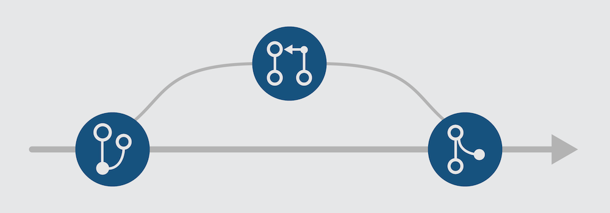

关于Pull Request

- 修一个bug / 优化或重构代码
- 为了让github的commit历史记录更加清晰， 建议在你的PR的标题中添加<title> (#<issue-id>), 例如：update entities encoding/decoding (#3899)
- 为你某次PR的commit加上详细的解释
- 添加相关的单元测试
- 运行单元测试并保证所有的单元测试都是通过的。确保新的代码不会对之前的功能造成影响。
- 当完成了以上的步骤之后，不要忘了提交你的PR :P
- 添加新的功能
- 提供开发这个新的功能的理由。最理想的方式是在开始开发之前，先创建一个issue，并且将这个issue标注为"new-features"，这样有助于我们一起设计讨论
- 创建一个新的分支
- 添加相关的单元测试
- 提交PR
推荐的方式:
1. 对于一个独立的新功能，从现有的master分支上开一个新的分支来实现该功能
2. 运行 npm test ， 确保提交的PR已经通过了所有的测试用例
不太推荐的方式:
1. 尽量不要提交和master分支有冲突的PR
2. 记得检查 build 文件夹中的内容，不要在PR中提交
如果你将要:
git checkout -b i-found-a-bug
# ... fix the bug ..
# only continue to next step if all tests pass
npm test
git add <relevant-files-that-have-been-modified>
git commit -m 'update entities encoding/decoding'
git push origin i-found-a-bug
项目结构简介
- assets :
- build :
- examples :
- src :
- test :
静态资源(截图)和依赖库 (stat.min.js & three.min.js)
发布的文件。我们会在每次发布最新的版本的时候更新这个文件夹。
最新的进展会反应在这个文件夹中
具有代表性的例子，展示了Gio的功能和主要API的具体用法
源码
在src文件夹中代码的单元测试
开发环境构建
- 选项1: npm
- 选项2: yarn
需要有Node.js (v9.10.0)
1. Fork仓库
2. 复制Github仓库到本地
git clone https://github.com/<your-github-id>/Gio.js.git
3. 安装开发工具和依赖库
npm install
yarn install